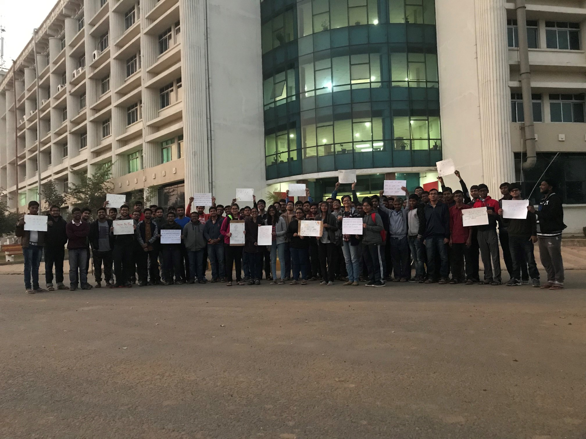

What is NSS IIT Patna all about??
NSS stands for National Service Scheme. NSS IIT Patna is an organisation that organises various socially productive events that are concerned with meeting the growing needs of the environment, the people (especially children) and all those who form a part of our spaces, the centre of activity being Amhara village. We serve the people of some selected villages near our campus including Amhara village, Raghavpur village and a few more. NSS IITP has emerged as one of the largest and most well-developed bodies that aims to create a sense of "Simplicity of Life and Dignity of Labour".
NSS IIT Patna mainly comprises of the student body, including mentors. All the activities are conducted by the student body. The NSS unit of IITP consists of different cells whose volunteers execute various functions. The main cells are Teaching, Technical Skills, Rural Development, Environment and Chetna. The Teaching Group conducts regular classes and weekly tests for the children of Amhara village. The Technical Skills Group is responsible for upgrading the children’s knowledge about computers and improving their fluency in English so that they remain at par with the fast progressing world. The Environment Group conducts activities like plantation drives, cleanliness drives, etc. The Rural Development Group is concerned with the progress of the youth of the villages by making them aware of the varied job opportunities available. It also spreads information regarding various government organisations, schemes and policies. The Chetna Group organises multiple events and drives, blood donation camps and social awareness programs. Apart from these the NSS wing of IIT Patna also conducts various other activities both inside and outside the campus.
Special activities are organised on national holidays and on the birth anniversaries of our national leaders. This not only spreads information but also motivates others to contribute their bits and parts in making the society a better place to live in. Various competitions and events are organised for children of all age groups in Amhara village to discover the hidden talents in them. Since NSS IITP has come into existence, it has been setting various goals and has also been accomplishing them. The teams of NSS IITP are working in coordination with each other and striving to make the future of the children brighter, empower the women to be self-dependent and make the villages just as the Father of our Nation had wanted them to be. Every NSS volunteers are compiled to complete 80 hours of their service to pass the course. In the future, we are also planning to extend our scope and include a few more villages.
